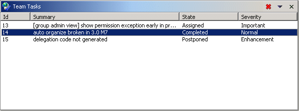

Collaboration Team Task ViewThis view is for managing team tasks: creating them, assigning them to users and groups, and viewing those assigned to the current workbench user.  Once created, a team task automatically appears in the team task view in the assignees' workbench. Only group leaders and the administrator may assign a team task to users besides themselves. Tool BarThe tool bar has a button for deleting the selected tasks. The tool bar menu contains the following items:
Team Task ListThe columns in this list show the task identifier, summary, state, and severity. If open, the properties view shows additional information about the selected task, such as to whom it is assigned and who created it.
|